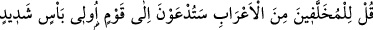
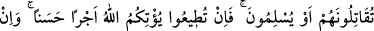
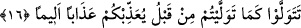

O’nun dışındakileri arada bir perde de olsa bırak.
Çünkü sevgili, ziyaretinden sonra tekrar ziyaretini engellemez
Seven, kendisini seveni ancak ziyaret eder.
Âyet-i kerîmede, dünyanın hased edilmesinin muhtemel olduğuna ve bunun da nefsin
perişanlığından olduğuna işâret vardır. Hadis-i şerifte Hz. Peygamber (s.a.) “birbirinizi
hased etmeyin”[111] demiştir. Yâni ilim bakımından olsun, mal bakımından olsun
Allah’ın nimetleri üzerinde hasedleşmeyin, demektir. Ancak, Allah yolunda harcanan
mala ve kendisiyle amel edilen ilme gıbta edilebilir.
“Neceş”, bir malı almayacağın halde fiyatını yükseltmendir. Veya bir başkasını kötü
bir şeyi yapmaya teşvik etmek demektir. Rasûlullah (s.a.) bunların da yapılmasını
istemiyor, “birbirinize buğz etmeyin, buğz Allah için olursa müstesna”, buyuruyor.
Şeyh Kelâbâzi der ki: “Birbirinize buğzetmeyin”in mânâsı, isteklerinizde ve
mezheblerinizde ihtilâf etmeyin. Çünkü dinde bid’at ve yoldan sapma, buğzu gerektirir.
Aranızdaki bağları koparmayın. Nitekim bir insan arkadaşına sırt çevirirse, o da ondan
yüz çevirir. Veya birbirinizi gıybet etmeyin, anlamınadır. Kardeşliğin özelliği yüzyüze
olmaktır. Âyet-i kerîmede: “Kardeş kardeş, karşılıklı koltuklar üzerindedirler” (Hıcr,
15/47) buyurulmuştur. Nitekim Efendimiz (s.a.) de: “Ey Allah’ın kulları kardeşler
olunuz”[112] buyurmuştur.
Hâfız demiştir ki:
Kardeşin kardeşe merhameti yoktur,
Babanın oğluna iyiliğini görmüyorum.
Kız kardeşler anneleriyle savaş ve didişmede,
Çocukların babalarına kötülük beslediğini görüyorum.
16. Bedevîlerden (seferden) geri kalmış olanlara de ki: Siz yakında çok kuvvetli
bir kavme karşı savaşmaya çağırılacaksınız. Onlarla, teslim oluncaya kadar
savaşacaksınız. Eğer emre itâat ederseniz, Allah size güzel bir mükâfat verir. Ama
önceden döndüğünüz gibi yine dönecek olursanız sizi acıklı bir azaba uğratır.
Harb konusunda epeyce gücü olan bir kavimle harbetmek maksadıyla davet
olunacaksınız. Burada kasdedilenler; Benû Hanîfe ve Ebû Hayy sefînesidir. Kâmus’ta
bu şekildedir. Veya burada kasdedilenler Müseylemetü’l-Kezzâb’ın kavmi olan
Yemâmelilerdir. Yahut Rasûlullah (s.a.)’ın vefatından sonra dinden dönenlerdir. Yahut